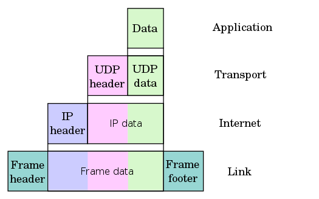

Сети и сокеты
Для обмена информацией в компьютерных сетях придуманы стандартные протоколы (договорённости о том, кто когда что кому отправляет и что это значит).
ISO/OSI
Protocol data unit (PDU)
- Physical
- Data Link
- Network
- Transport
- Session
- Presentation
- Application
TCP/IP
Стек протоколов Интернета, или стек TCP/IP, выглядит примерно так:
| Уровень | Протоколы этого уровня |
|---|---|
| Прикладной (application) | HTTP, SSH, DNS, ... |
| Транспортный (transport) | TCP, UDP, SCTP, QUIC, ... |
| Межсетевой (inter-net) | IPv4, IPv6 |
| Канальный (link) | Ethernet, Wi-Fi (IEEE 802.11), ... |
Обычно мы используем набор протоколов разных уровней, чтобы решить свою прикладную задачу. Например, при загрузке веб-страницы http://wiki.cs.hse.ru/ будут как минимум использоваться HTTP, TCP, IPv4 и какие-то канальные протоколы.
Фрагмент данных с верхнего уровня стека заворачивается в “конверт” нижнего уровня (картинка из википедии на примере UDP):

Данные доходят до адресата через цепочку промежуточных устройств, каждое из которых распаковывает и просматривает столько конвертов, сколько ему нужно и сколько оно умеет:

Например, пока пакет не дошёл до хоста (компьютера) – адресата, никто* не смотрит на заголовки транспортного уровня. Благодаря этому поверх имеющейся инфраструктуры межсетевого уровня можно реализовывать новые способы обмена информацией.
Как правило, протоколы прикладного уровня реализованы в userspace (в программах и библиотеках), транспортного и межсетевого — в ядре ОС, а канальный уровень делят между собой ОС и аппаратура.
На межсетевом уровне появляется глобальная адресация: у каждого хоста в сети есть уникальный идентификатор — адрес. Адрес IPv4 — 4 байта, их записывают в десятичной системе: 92.242.58.220. Адрес IPv6 — 16 байт, их записывают в 16-ричной системе двухбайтовыми последовательностями через двоеточие: 2a02:6b8::2:242 (там, где два двоеточия подряд, подразумевается последовательность нулевых байт).
Протокол TCP представляет абстракцию “трубы с данными”, похожей на канал в Unix: гарантируется надёжная доставка данных в изначальной последовательности, не сохраняются границы между отдельными записями в канал. Протокол UDP представляет абстракцию “голубиной почты”: можно отправлять датаграммы — отдельные фрагменты данных известного размера, которые могут дойти до получателя в произвольном порядке, дойти несколько раз или не дойти вовсе.
TCP и UDP используют адрес межсетевого уровня и добавляют ещё 16 бит, которые называются «порт». Есть well-known порты, которые обычно используются для разных надобностей (см. /etc/services): например, сервер HTTP обычно использует порт 80.
Ну и теперь собственно сокеты
POSIX даёт нам слой абстракции поверх протоколов транспортного уровня и ниже. Абстракция называется sockets (гнёзда). В userspace сокет виден как файловый дескриптор.
Создаём сокет (man 2 socket):
#include <sys/types.h>
#include <sys/socket.h>
int socket(int domain, int type, int protocol);
Параметр domain выбирает используемый протокол межсетевого уровня (ну примерно). Нам будут интересны три варианта:
Name Purpose Man page
AF_INET IPv4 Internet protocols ip(7)
AF_INET6 IPv6 Internet protocols ipv6(7)
AF_UNIX Local communication unix(7)
Сокеты бывают как минимум двух типов (параметр type): потоковые и датаграммные (ср. TCP и UDP). Для первых хорошо подходят стандартные операции read/write, для вторых не очень.
SOCK_STREAM Provides sequenced, reliable, two-way, connection-based
byte streams.
SOCK_DGRAM Supports datagrams (connectionless, unreliable messages
of a fixed maximum length).
protocol мы будем обычно указывать равным нулю, чтобы ОС выбрала за нас стандартный протокол нужного типа (TCP для AF_INET/SOCK_STREAM, UDP для AF_INET/SOCK_DGRAM), но можно и явно указать IPPROTO_TCP или IPPROTO_UDP.
Где бы взять адрес
Допустим, мы хотим соединиться с хостом ya.ru по протоколу HTTPS. Мы пока не знаем, есть ли у хоста адрес IPv6 или IPv4 и каковы эти адреса. Нам нужно обратиться к серверу DNS (Domain Name System) и спросить у него. Ещё неплохо бы посмотреть в /etc/services, какого типа сокет нам понадобится (stream или datagram) и какой использовать порт.
Для этого нам дана функция getaddrinfo:
int getaddrinfo(const char *node, const char *service,
const struct addrinfo *hints,
struct addrinfo **res);
void freeaddrinfo(struct addrinfo *res);
const char *gai_strerror(int errcode);
struct addrinfo {
int ai_flags;
int ai_family;
int ai_socktype;
int ai_protocol;
socklen_t ai_addrlen;
struct sockaddr *ai_addr;
char *ai_canonname;
struct addrinfo *ai_next;
};
Попробуем распечатать адреса, которые она нам возвращает. Смотреть на это без боли невозможно:
#include <sys/types.h>
#include <sys/socket.h>
#include <netdb.h>
#include <stdio.h>
#include <arpa/inet.h>
int main(int argc, char* argv[]) {
if (argc != 3) {
fprintf(stderr, "Usage: %s NODE SERVICE\n", argv[0]);
return 1;
}
struct addrinfo *res = NULL;
int gai_err;
if (gai_err = getaddrinfo(argv[1], argv[2], NULL, &res)) {
fprintf(stderr, "gai error: %s\n", gai_strerror(gai_err));
return 2;
}
for (struct addrinfo *ai = res; ai; ai = ai->ai_next) {
char buf[1024];
printf("ai_flags=%d, ai_family=%d, ai_socktype=%d\n",
ai->ai_flags, ai->ai_family, ai->ai_socktype);
struct sockaddr_in *inet;
struct sockaddr_in6 *inet6;
switch (ai->ai_family) {
case AF_INET:
inet = (struct sockaddr_in *)ai->ai_addr;
printf("\taddress: %s, port: %hu\n",
inet_ntop(ai->ai_family, &inet->sin_addr,
buf, sizeof(buf)),
htons(inet->sin_port));
break;
case AF_INET6:
inet6 = (struct sockaddr_in6 *)ai->ai_addr;
printf("\taddress: %s, port: %hu\n",
inet_ntop(ai->ai_family, &inet6->sin6_addr,
buf, sizeof(buf)),
htons(inet6->sin6_port));
break;
default:
printf("\tunknown address family\n");
}
}
freeaddrinfo(res);
}
Так или иначе, теперь у нас есть адреса, по которым найдём сервиса́ и можно создавать сокеты подходящих типов и пробовать устанавливать соединения.
Потоковые сокеты
Есть две стороны: клиент и сервер.
Клиент:
#include <sys/types.h>
#include <sys/socket.h>
#include <netdb.h>
#include <stdio.h>
#include <unistd.h>
#include <string.h>
int create_connection(char* node, char* service) {
struct addrinfo *res = NULL;
int gai_err;
struct addrinfo hint = {
.ai_family = AF_UNSPEC, // можно и AF_INET, и AF_INET6
.ai_socktype = SOCK_STREAM, // но мы хотим поток (соединение)
};
if (gai_err = getaddrinfo(node, service, &hint, &res)) {
fprintf(stderr, "gai error: %s\n", gai_strerror(gai_err));
return -1;
}
int sock = -1;
for (struct addrinfo *ai = res; ai; ai = ai->ai_next) {
sock = socket(ai->ai_family, ai->ai_socktype, 0);
if (sock < 0) {
perror("socket");
continue;
}
if (connect(sock, ai->ai_addr, ai->ai_addrlen) < 0) {
perror("connect");
close(sock);
sock = -1;
continue;
}
break;
}
freeaddrinfo(res);
return sock;
}
int main(int argc, char* argv[]) {
if (argc != 3) {
fprintf(stderr, "Usage: %s NODE SERVICE\n", argv[0]);
return 1;
}
int sock = create_connection(argv[1], argv[2]);
if (sock < 0) {
return 1;
}
char* msg = "hello world\n";
write(sock, msg, strlen(msg));
close(sock);
}
Сервер:
#include <sys/types.h>
#include <sys/socket.h>
#include <netdb.h>
#include <stdio.h>
#include <unistd.h>
#include <string.h>
int create_listener(char* service) {
struct addrinfo *res = NULL;
int gai_err;
struct addrinfo hint = {
.ai_family = AF_UNSPEC,
.ai_socktype = SOCK_STREAM,
.ai_flags = AI_PASSIVE,
};
if (gai_err = getaddrinfo(NULL, service, &hint, &res)) {
fprintf(stderr, "gai error: %s\n", gai_strerror(gai_err));
return -1;
}
int sock = -1;
for (struct addrinfo *ai = res; ai; ai = ai->ai_next) {
sock = socket(ai->ai_family, ai->ai_socktype, 0);
if (sock < 0) {
perror("socket");
continue;
}
if (bind(sock, ai->ai_addr, ai->ai_addrlen) < 0) {
perror("bind");
close(sock);
sock = -1;
continue;
}
if (listen(sock, SOMAXCONN) < 0) {
perror("listen");
close(sock);
sock = -1;
continue;
}
break;
}
freeaddrinfo(res);
return sock;
}
int main(int argc, char* argv[]) {
if (argc != 2) {
fprintf(stderr, "Usage: %s SERVICE\n", argv[0]);
return 1;
}
int sock = create_listener(argv[1]);
if (sock < 0) {
return 1;
}
int connection = accept(sock, NULL, NULL);
char* msg = "hello world\n";
write(connection, msg, strlen(msg));
close(sock);
}
Датаграммные сокеты
ssize_t sendto(int sockfd, const void *buf, size_t len, int flags,
const struct sockaddr *dest_addr, socklen_t addrlen);
ssize_t recvfrom(int sockfd, void *buf, size_t len, int flags,
struct sockaddr *src_addr, socklen_t *addrlen);